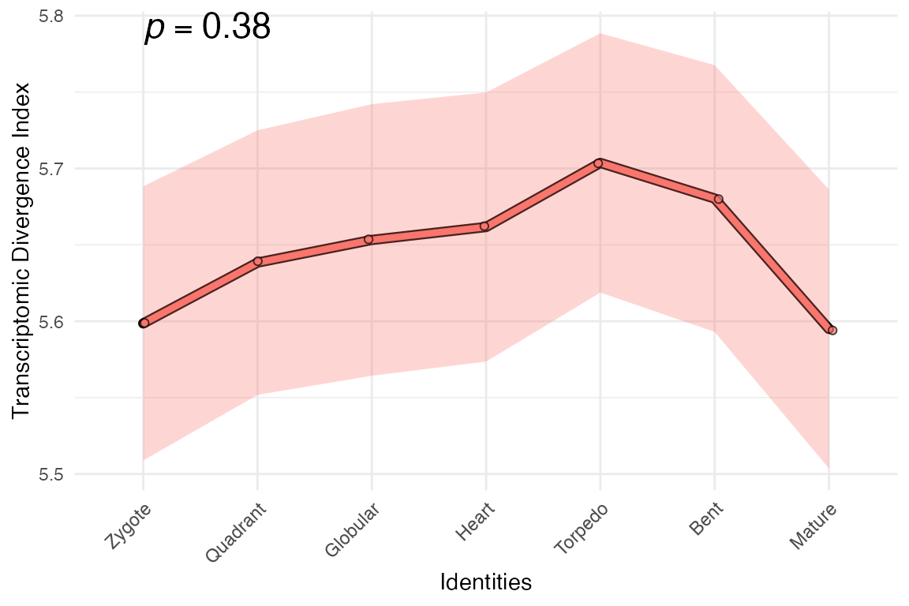
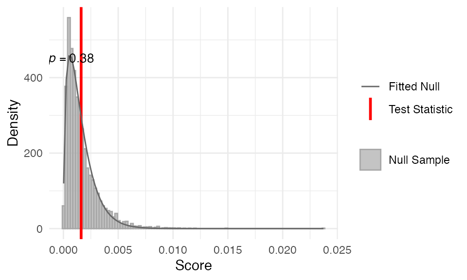

So far, most of the vignettes have focused on workflows and
discussions centred around the transcriptome age index (TAI). However,
we can also assign other information for each gene (analogous to gene
age in TAI). Examples include TDI,
TSI,
TPI
and so on (though the names of these indices can differ between studies
and are thus not standardised).
In the sections below, we describe the workflow for the transcriptome divergence index (TDI) and transcriptome specificity index (TSI). These and other index-based methods use the same framework as TAI, aside from the method to give a factor or numeric value to each gene (e.g. gene age for TAI).
The good news is that myTAIv2 is rather flexible; both
BulkPhyloExpressionSet and
ScPhyloExpressionSet objects can accommodate other indices,
along with most of the myTAIv2 functions.
Users can simply follow the workflow outlined in statistical tests, transformations along with most of the plotting functionalities, using non-TAI data.
The TDI (Quint et al.,
2012) uses deciled dNdS values for each gene and summarises this
information across all genes at a given stage (analogous to TAI) to
quantify the overall transcriptome ‘divergence’.
For the vast majority of genes, the dNdS values are below 1 (i.e. purifying selection). Therefore, while TDI is called transcriptome divergence index, TDI can be thought to capture the degree of purifying selection (Lotharukpong et al. 2024).
R packages such as orthologr
can facilitate dNdS estimation and divergence-stratigraphy
computation used in the TDI approach.
Assuming that we have the divergence
strata, similar to TAI, TDI is calculated
as:
where is the expression level of gene at a given sample (e.g. a biological replicate for a developmental stage), and is the evolutionary age of gene .
Like TAI, for developmental time-course data,
can be grouped for each stage (if replicate data exists) and compared
across developmental stages to obtain the overall TDI profile.
For pairwise comparisons (see 📈),
can be grouped as one of the conditions to be compared.
For single cell data, (see 📊),
is the TDI for a given cell or cell type (if pseudo-bulked).
Now we create the mock dataset, where we assign a value between 1 and
10 for all genes. This is the same distribution of values as the
divergence strata.
# this is a mock divergence strata dataset
# we assign a value between 1 and 10 for all genes
gene_names <- example_phyex_set_old@gene_ids
example_divergence_strata <-
setNames(sample(1:10, length(gene_names), replace = TRUE), gene_names) |>
as.factor()
# mock expression data taken from example_phyex_set_old@expression
example_expression <-
example_phyex_set_old@expression |>
as.data.frame() |>
tibble::rownames_to_column(var = "GeneID")Now we construct the input data.frame for
as_BulkPhyloExpressionSet()
example_phyex_set_tdi.df <-
data.frame(phylorank = example_divergence_strata) |>
tibble::rownames_to_column(var = "GeneID") |>
dplyr::select(phylorank, GeneID) |>
dplyr::left_join(example_expression, by = "GeneID")Create the BulkPhyloExpressionSet.
example_phyex_set_tdi <-
myTAI::as_BulkPhyloExpressionSet(
example_phyex_set_tdi.df,
name = "Example TDI data",
index_type = "TDI")plot away!
myTAI::plot_signature(example_phyex_set_tdi)## Computing: [========================================] 100% (done)
Looks interesting right?
… although as you can expect from the
myTAI::stat_flatline_test(), because we assigned random
values, the overall pattern doesn’t deviate from a flat line.
myTAI::stat_flatline_test(example_phyex_set_tdi)
The dNdS values are not without issues. For example, it is important to choose an appropriate evolutionary distance to pairwise align and compare nucleotide sequences. Too close results in no meaningful substitution and too distant results in saturation. To overcome this, similar measures to the dNdS can be computed from MSAs.
The TSI (Lotharukpong
et al., 2024) uses expression breadth/specificity information that
can be obtained for each gene and summarises this information across all
genes at a given stage (analogous to TAI) to quantify the overall
transcriptome ‘specificity’.
Similar to TAI, TSI is calculated as:
where is the expression level of gene at a given sample (e.g. a biological replicate for a developmental stage), and is the evolutionary age of gene .
Like TAI, for developmental time-course data,
can be grouped for each stage (if replicate data exists) and compared
across developmental stages to obtain the overall TSI profile.
For pairwise comparisons (see 📈),
can be grouped as one of the conditions to be compared.
For single cell data, (see 📊),
is the TSI for a given cell or cell type (if pseudo-bulked).
Thus, TSI represents the expression-weighted mean gene expression specificity.
You can re-use the same workflow as for TDI that we have shown above. The only differences are that (1) you need to give each gene the expression specificity score and not divergence strata, and (2) you will be using real data not the mock dataset!
For TSI, accurate inference of expression specificity is key.
According to Kryuchkova-Mostacci & Robinson-Rechavi, 2017:
Tau appears consistently to be the most robust method in our analyses.
Thus, we recommend the tau (or ) score as introduced by Yanai et al. 2005 as a measure of expression specificity, though other measures exist (e.g. those based on information entropy). You can also decile the tau values (similar to deciled dNdS for divergence-strata) to enable analogous comparisons to TAI.
Regardless of the measures chosen for expression specificity/breadth, the estimates improve with data quality (i.e. number of RNA-seq samples) and quantity (i.e. diversity of the sampling such as multiple tissues and stages, and low or no technical noise).
Using two examples (TDI and TSI), we went through different (non-TAI) evolutionary and expression indices that can be used for evolutionary transcriptomics studies. As long as the computation follows the form , where is a value (factor or numeric) assigned to each gene, you can even invent new ‘indices’.
Looking forward to seeing what can be done!
You might wonder - why so many transcriptome indices? TAI, TDI, TSI,
TPI and other such indices provide complementary views
on the transcriptome evolution patterns. For more details on their
biological interpretation, please check these studies for TAI,
TDI,
TSI,
TPI,
etc.
If you are using different indices, it is important to check that the gene-level values assigned (e.g. age, divergence-stratum) are not strongly correlated. High correlation means that the resulting indices do not provide complementary information (i.e. not reflect different biological aspects).